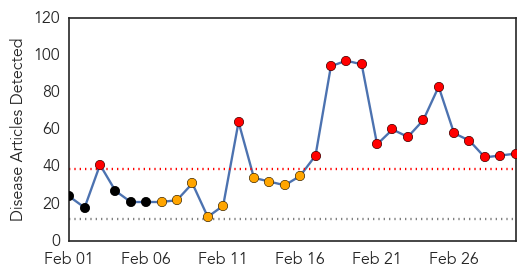
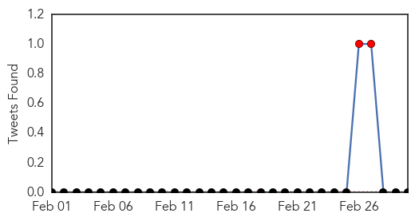
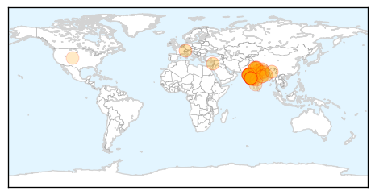

Ebola
30-Day Web Trend
0 alerts, 0 warnings

30-Day Twitter Trend
5 alerts, 4 warnings

Article Locations

Article Confidences

Top Articles:
- 1.000
- Spanish nurse contracts Ebola in Madrid
- 1.000
- President Sirleaf Urges U.S. to Continue Ebola Aid
- 1.000
- FDA OKs trials for experimental Ebola drug to begin in Liberia
- 1.000
- WHO declares end of Ebola outbreak in Sierra Leone, but neighbor Guinea struggles to end virus
- 0.999
- Sierra Leone's vice president becomes highest ranking official to be quarantined
- 0.999
- Exclusive: Guinea says Ebola patients sent home after botched blood tests
- 0.999
- Africa's medicine men key to halting Ebola spread in Guinea
- 0.999
- Guinea says Ebola patients sent home after botched blood tests
- 0.999
- Exclusive: Guinea says Ebola patients sent home after botched blood tests
- 0.999
- Untitled Article
- 0.999
- Africa's traditional healers help halt Ebola's spread
- 0.998
- New Confirmed Cases of Ebola In Africa, Update
- 0.998
- Sierra Leone VP Quarantines Himself After Bodyguard Dies Of Ebola
- 0.998
- China's efforts in combating the Ebola virus recognized by the UN -
- 0.998
- Sierra Leone's vice president becomes highest ranking official to be quarantined
- 0.998
- Sierra Leone’s vice president in quarantine for Ebola
- 0.998
- Isolation can take emotional toll on volunteers at risk of Ebola
- 0.998
- Interview: UN hails China's "tremendous" help in battling Ebola
- 0.998
- Vice President of Sierra Leone Places Self Under Ebola Quarantine as Cases Rise
- 0.998
- Liberia looks forward to end of Ebola
- 0.997
- Africa's medicine men key to halting Ebola spread in Guinea
- 0.997
- Sierra Leone's vice president in quarantine for Ebola
- 0.997
- Sierra Leone's vice president in quarantine for Ebola
- 0.997
- Sierra Leone’s VP in quarantine for Ebola
- 0.997
- Sierra Leone’s vice president in quarantine for Ebola: News
- 0.997
- EU response to the Ebola outbreak in West Africa, 02 March 2015 - Sierra Leone
- 0.997
- EU response to the Ebola outbreak in West Africa
- 0.996
- Interview: Sierra Leone thanks China for aid in fighting Ebola: FM
- 0.995
- Ebola in Brussels – a high profile conference
- 0.995
- 'Ebola nurse' Nina Pham sues Texas hospital
- 0.995
- Questions remain about how Dallas nurse got Ebola
- 0.995
- U.S., Liberia kick off trial of Ebola drug ZMapp
- 0.995
- West Africa Ebola update
- 0.995
- Dallas nurse Nina Pham free of Ebola
- 0.995
- Dealing with drugs
- 0.995
- Ebola outbreak: Sierra Leone vice-president quarantined
- 0.995
- Ebola Virus Reaches Sierra Leone VP’s Office
- 0.993
- Sierra Leone Vice President in Self Quarantine
- 0.993
- Sierra Leone moves beyond Ebola
- 0.993
- Samuel Sam-Sumana, the Vice President of Sierra Leone, Quarantines Himself For Three Weeks As Ebola Rises
- 0.993
- Dallas nurse declared free of Ebola
- 0.993
- 'Juju' men say they could have helped curb Ebola
- 0.993
- Namibia makes strides in Ebola help
- 0.991
- Nina Pham, Dallas nurse who survived Ebola, sues hospital
- 0.990
- Ebola survivor Nina Pham is suing the hospital chain she says botched her case
- 0.990
- Sierra Leone vice president in quarantine over Ebola
- 0.989
- 101st Returns Home From Liberia and Ebola Mission
- 0.988
- Youngstown News, EBOLA survivor Report
- 0.988
- New phase of the Ebola battle
- 0.987
- Life After Ebola: Nurse Nina Pham Says She Has Nightmares, Aches, Hair Loss
Showing top 50 articles...
Top Tweets:
- 0.912
- Ebola Update: 23825 confirmed probable and suspected cases reported in 3 most affected countries with 9666 deaths. EbolaResponse
- 0.764
- Texas nurse who contracted Ebola to sue hospital chain - CNN http://t.co/eayfJWKPtr ebola EVD
- 0.681
- RT: Sierra Leone's Vice President quarantines himself for 21 days after his guard dies of Ebola http://…
- 0.644
- Ebola Survivor Nina Pham Suing Hospital to Be 'Voice for Other Nurses' - ABC News http://t.co/EzMosTTD9X ebola EVD
- 0.643
- Note much criticism comes from people not working in affected countries or attempting Ebola treatment trials.
- 0.628
- Isolation can take emotional toll on volunteers at risk of Ebola - Los Angeles Times http://t.co/feXMJ4Fbv9 ebola EVD
- 0.628
- Isolation can take emotional toll on volunteers at risk of Ebola - Los Angeles Times http://t.co/MNgM3E7CAT ebola EVD
- 0.613
- Monthly Overview on the Ebola Outbreak in West Africa for February 2015 http://t.co/I3msfgg2Xl
- 0.588
- Nurse Who Survived Ebola Says Hospital Failed Her - ABC News http://t.co/xGOErhLUzy ebola EVD
- 0.547
- RT: Liberia: reviving ag activities of communities affected by the Ebola outbreak UNFAO http://t.co/bEkABFK61R http://t…
- 0.540
- Attorney: Ebola nurse to sue for negligence - USA TODAY http://t.co/EXEcnTRA53 ebola EVD
- 0.528
- Liberia Ebola doctor: 'We're going to win very soon' - BBC News http://t.co/CtGC80zI92 ebola EVD
Swine Flu
30-Day Web Trend
16 alerts, 9 warnings

30-Day Twitter Trend
2 alerts, 0 warnings

Article Locations
Article Confidences

Top Articles:
- 1.000
- Swine flu in Mumbai: Maha govt will bear swine flu treatment cost
- 1.000
- 40 more dead as swine..., SahilOnline News
- 1.000
- Swine flu claims 34 more lives, toll mounts to 1,075
- 1.000
- Rain, fall in temp may lead to rise in swine flu cases
- 1.000
- Swine flu death toll climbs to 1075, almost 20,000 cases nationwide
- 1.000
- Swine flu death rings alarm bell
- 0.999
- Swine flu could spread to Pakistan: Ansar Burney
- 0.999
- Health Minister appeals all to collectively fight Swine flu; asks not to travel to outbreak areas
- 0.998
- Swine flu in West Bengal: 16 new cases in 24 hrs, total affected 131
- 0.998
- Swine flu spreads in UP, number of cases likely to go up due to rain
- 0.997
- Weather damper on battle against flu
- 0.997
- Treat all swine flu patients free of cost: Maharashtra CM Fadnavis
- 0.997
- Rain to flare up swine flu terror
- 0.995
- Swine flu in Nagaland: State to collectively fight, instead of provide wrong information
- 0.995
- Swine flu in India: Nationwide spurt in cases, death toll crosses 1000
- 0.995
- H1N1 Swine flu: 6 more die in Rajasthan; Government says no negligence
- 0.994
- Swiss strain of flu virus not so scary, doctors say
- 0.994
- Sonam Kapoor tests Positive for Swine flu, Admitted to Hospital in Mumbai
- 0.992
- Swine flu spreads further in Uttar Pradesh
- 0.992
- Sudden drop in temperature raises viral infection scare
- 0.991
- 3 Suspected Swine Flu Cases Detected in Tyre — Naharnet
- 0.989
- Fall in temperature can lead to rise in swine flu cases
- 0.988
- Jharkhand requires more VTM kits to be fully prepared
- 0.984
- Swine flu strikes Ranchi woman
- 0.979
- School Students Worried as Swine Flu Cases Surge in Gujarat
- 0.978
- Sonam Kapoor tests positive for swine flu - Sonam Kapoor- Swine Flu- Dolly Ki Doli- Prem Ratan Dhan Payo
- 0.977
- Maharashtra govt to bear swine flu treatment cost
- 0.977
- Swine flu-hit member wants drive to educate people on disease
- 0.975
- Swine flu claims 8 more lives in Gujarat; toll reaches 283
- 0.974
- Swine flu-hit Sonam Kapoor admitted to Kokilaben hospital
- 0.971
- Maharashtra picks up private hospital tab to treat swine flu
- 0.970
- Over 1,100 dead due to swine flu
- 0.968
- Over 1,100 dead due to swine flu
- 0.960
- Swine flu toll in Maharashtra rises to 152
- 0.959
- 'Individuals, state to collectively fight against swine flu'
- 0.955
- Maharashtra swine flu toll reaches 152
- 0.937
- Swine flu: Maharashtra govt says next 15 days are critical, extends help to hospitals
- 0.928
- Dallasblog.com, the Dallas, Texas news blog and Dallas, Texas information source for the DFW Metroplex.
- 0.924
- Here's How Salman Khan is Protecting Himself from Swine Flu
- 0.864
- Sonam Kapoor recovering well, swine flu under control
- 0.847
- Sonam Kapoor admitted in Mumbai hospital
- 0.835
- Sonam Kapoor recovering well after contracting swine flu
- 0.817
- Sonam Kapoor in Mumbai for swine flu treatment, condition stable
- 0.751
- H1N1 Patient Dies After ICU Power Cut, Claims Family
- 0.726
- Sonam Kapoor recovering well, swine flu under control
- 0.688
- Sonam Kapoor showing signs of speedy recovery from swine flu : Celebrities, News
- 0.669
- Pediatricians Under Pressure From Parents To Spread Out Vaccine Schedule
Top Tweets:
-
No tweets found for Mar 02, 2015